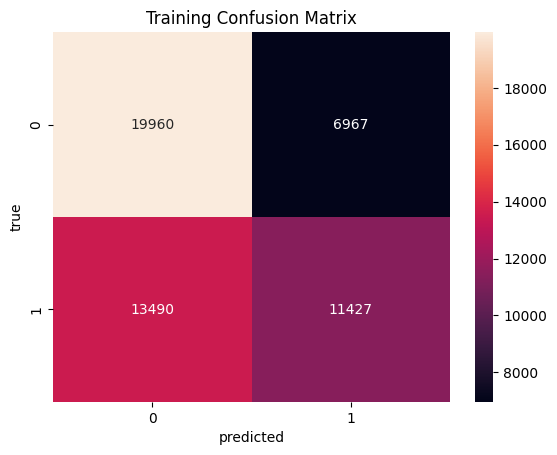
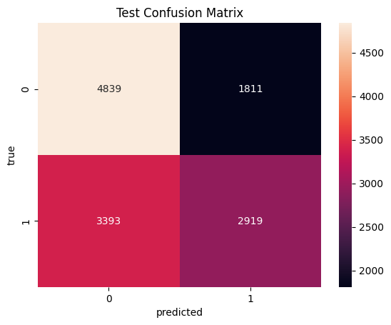

import numpy as np
import seaborn as sns
import pandas as pd
import matplotlib.pyplot as plt
import scipy
import sklearn def merit(x,y,correlation="pearson"):
# x=matrix of features
# y=matrix (or vector) of targets
# correlation="pearson" or "spearman"
r_xx=0
r_xy=0
for i in range(x.shape[1]):
for v in range(i+1,x.shape[1]):
xi = x.iloc[:,i]
xv = x.iloc[:,v]
if correlation=="pearson":
correlation_coefficient, p_value = scipy.stats.pearsonr(xi,xv)
r_xx += correlation_coefficient
if correlation=="spearman":
correlation_coefficient, p_value = scipy.stats.spearmanr(xi,xv)
r_xx += correlation_coefficient
for i in range(x.shape[1]):
xi = x.iloc[:,i]
yi = y.iloc[:,0]
if correlation=="pearson":
correlation_coefficient, p_value = scipy.stats.pearsonr(xi,yi)
r_xy += correlation_coefficient
if correlation=="spearman":
correlation_coefficient, p_value = scipy.stats.spearmanr(xi,yi)
r_xy += correlation_coefficient
k = x.shape[1]
if k == 1:
r_xx_avg =0
r_xy_avg = r_xy/(k)
else:
r_xx_avg = r_xx/((k-1)*k/2)
r_xy_avg = r_xy/(k)
return (k*np.absolute(r_xy_avg)/(np.sqrt(k+k*(k-1)*np.absolute(r_xx_avg))))cardio = pd.read_csv("../Data/01-modified-data/cardiovascular_numeric_final.csv")
cardio = cardio.drop(columns=['Unnamed: 0', 'id'])
cardio.head()| age | gender | height | weight | ap_hi | ap_lo | cholesterol | gluc | smoke | alco | active | cardio | bmi | |
|---|---|---|---|---|---|---|---|---|---|---|---|---|---|
| 0 | 50 | 2 | 168 | 62 | 110 | 80 | 1 | 1 | 0 | 0 | 1 | 0 | 21.97 |
| 1 | 55 | 1 | 156 | 85 | 140 | 90 | 3 | 1 | 0 | 0 | 1 | 1 | 34.93 |
| 2 | 52 | 1 | 165 | 64 | 130 | 70 | 3 | 1 | 0 | 0 | 0 | 1 | 23.51 |
| 3 | 48 | 2 | 169 | 82 | 150 | 100 | 1 | 1 | 0 | 0 | 1 | 1 | 28.71 |
| 4 | 48 | 1 | 156 | 56 | 100 | 60 | 1 | 1 | 0 | 0 | 0 | 0 | 23.01 |
import itertools
def maximize_CFS(x,y):
list1 = [*range(1,x.shape[1]+1)]; #print(list1)
m = float('-inf')
for L in range(1,len(list1)):
for subset in itertools.combinations(list1, L):
subset_l = list(subset)
subset_l = [x - 1 for x in subset_l]
x_subset = x.iloc[:,subset_l]
m_temp = merit(x_subset,y,correlation="spearman")
if m_temp > m:
print("found new max: ", m_temp)
print("optimal features = ", subset_l)
m= m_temp
opt_set = x_subset
return opt_set
def maximize_CFS_2(x,y):
list1 = [*range(1,x.shape[1]+1)]; #print(list1)
m = float('-inf')
for L in range(1,len(list1)):
for subset in itertools.combinations(list1, L):
subset_l = list(subset)
subset_l = [x - 1 for x in subset_l]
x_subset = x.iloc[:,subset_l]
m_temp = merit(x_subset,y,correlation="spearman")
if m_temp > m:
print("found new max: ", m_temp)
subset_l_print = [x + 6 for x in subset_l]
print("optimal features = ", subset_l_print)
m= m_temp
opt_set = x_subset
return opt_setdef explore_data(x,y):
#PRINT SHAPE
print(x.shape)
print(y.shape)
#COMPUTE MERIT
# print("merit =",merit(x,y,correlation="spearman"));
print("merit =",merit(x,y,correlation="spearman"))
# #PLOT
# if (iplot):
# sns.pairplot(pd.DataFrame(np.hstack((x,y.reshape(y.shape[0],1)))))
# plt.show()cardio_x = cardio.drop(columns=['cardio'])
cardio_x_1 = cardio_x.iloc[:,0:6]
cardio_x_2 = cardio_x.iloc[:,6:12]
cardio_y = cardio[['cardio']]explore_data(cardio_x,cardio_y)(64806, 12)
(64806, 1)
merit = 0.3148619450034282x_opt_1=maximize_CFS(cardio_x_1,cardio_y) #using merit find the most revelent columns (1st 6)found new max: 0.24118366917520198
optimal features = [0]
found new max: 0.44305965281952503
optimal features = [4]
found new max: 0.4496408170195329
optimal features = [0, 4, 5]x_opt_2=maximize_CFS_2(cardio_x_2,cardio_y) #rest of (6)found new max: 0.2107372715369121
optimal features = [6]
found new max: 0.2586790918689096
optimal features = [6, 11]cardio_x_new = cardio_x.iloc[:,[0,4,5,6,11]] #best subset
explore_data(cardio_x_new,cardio_y)(64806, 5)
(64806, 1)
merit = 0.4562044278371533from sklearn import metrics
from sklearn.naive_bayes import MultinomialNB
from sklearn.model_selection import train_test_split
from sklearn.metrics import accuracy_scoreX_train, X_test, y_train, y_test = train_test_split(cardio_x_new, cardio_y, test_size=0.2, random_state=20)
nb_classifier = MultinomialNB()
nb_classifier.fit(X_train,y_train)
y_pred_test = nb_classifier.predict(X_test)
y_pred_train = nb_classifier.predict(X_train)/Users/xueningyang/Library/Python/3.9/lib/python/site-packages/sklearn/utils/validation.py:1183: DataConversionWarning: A column-vector y was passed when a 1d array was expected. Please change the shape of y to (n_samples, ), for example using ravel().
y = column_or_1d(y, warn=True)def get_metrics(true, preds):
"""
Takes gold labels and predictions to compute performance metrics
:param true: array-like object
:param preds: array-like object
:return: a tuple of various performance metrics
"""
accuracy = metrics.accuracy_score(true['cardio'],preds)
f1_score = metrics.f1_score(true['cardio'],preds)
conf_matrix = metrics.confusion_matrix(true['cardio'],preds)
return accuracy, f1_score, conf_matrixdef plot_confusion_matrix(conf_matrix_data, labels, data="train"):
"""
Takes as input confusion matrix data from get_metrics() and prints out a
confusion matrix
:param conf_matrix_data:
:return: None
"""
if data == "train":
plt.title("Training Confusion Matrix")
else:
plt.title("Test Confusion Matrix")
axis = sns.heatmap(conf_matrix_data,annot=True,fmt="d")
axis.set_xticklabels(labels)
axis.set_yticklabels(labels)
axis.set_xlabel("predicted")
axis.set_ylabel("true")
plt.show()
returnacc_train, f1_train, conf_train = get_metrics(y_train, y_pred_train)
acc_test, f1_test, conf_test = get_metrics(y_test, y_pred_test)
print("Training Accuracy:", acc_train)
print("Test Accuracy:", acc_test)
print("Training F1 Score:", f1_train)
print("Test F1 Score:", f1_test)Training Accuracy: 0.6054123910192115
Test Accuracy: 0.598518747106928
Training F1 Score: 0.5276719540070651
Test F1 Score: 0.5287085672885347plot_confusion_matrix(conf_train, [0, 1],data="train")
plot_confusion_matrix(conf_test, [0, 1],data="test")